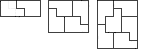

A tile is made of 5 unit squares as shown. Show that if a 5 x n rectangle can be covered with n tiles, then n is even. [Tiles can be turned over and rotated.] Show that a 5 x 2n rectangle can be tiled in at least 3n-12 ways.
Solution
Each tile includes a 2 x 2 square. But we can fit at most 2 x m such squares inside a 5 x (2m+1) rectangle. For at most 2 fit in each row and at most m in each column. [If we move each square as far to the left as possible and as far up as possible, then they will pack into a 4 x 2m rectangle and so there are at most 2m of them.] So we can fit at most 2m of the tiles into the 5 x (2m+1) rectangle and hence cannot cover it. So if a 5 x n rectangle can be tiled, then n must be even.
Consider the 5 x 2, 5 x 4 and 5 x 6 arrangements below. Call them A2, A4 and A6. A2 can be reflected to give 2 arrangements, A4 can be reflected to give 2 arrangements, and A6 can be reflected and rotated to give 4 arrangements. Let Sn be the total number of arrangements for a 5 x 2n rectangle. Then we have S1 ≥ 2. S2 ≥ 6 (22 derived from using two A2s and 2 from an A4). S3 ≥ 20 (23 by using three A2s, 22 by using an A2 above an A4, 22 by using an A2 below an A4, and 4 from an A6). So Sn ≥ 2.3n-1 for n = 1, 2, 3. We now use induction on n to prove that this holds for all n.
Now suppose the inequality holds for n-2, n-1, and n. Then we have Sn+1 >= 2 Sn + 2 Sn-1 + 4 Sn-2 (an A2 above a 5 x 2n arrangement, an A4 above a 5 x 2(n-1) arrangement, and an A6 above a 5 x 2(n-2) arrangement). So Sn+1 ≥ 4.3n-1 + 4.3n-2 + 8.3n-3 = 2.3n-3(18 + 6 + 4) = 2.3n-328 > 2.3n. So the inequality holds for n+1 and hence for all n.


© John Scholes
jscholes@kalva.demon.co.uk
10 Oct 2002